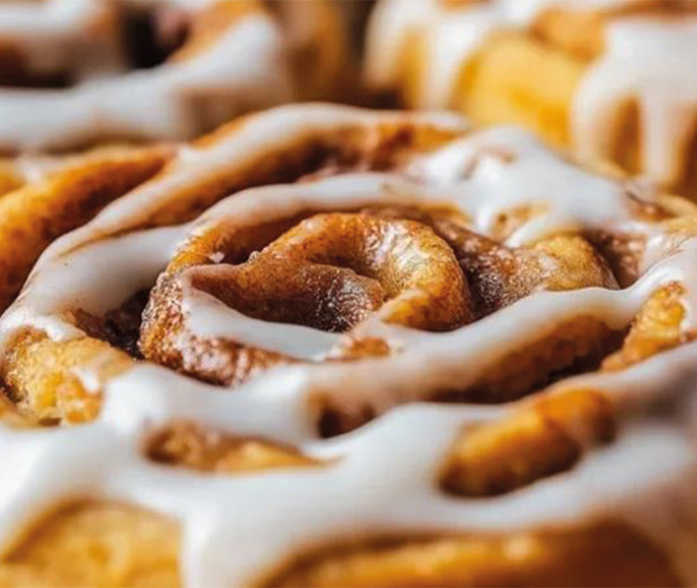

Recetario
Cinnamon Rolls (Rollos de canela)


45 minutos

15 unidades

Agregar a favoritos
Ingredientes:
• Huevos 2u
• Manteca 75gr
• Azúcar negra 100gr
• Canela 2cdtas
• Harina 300gr
• Levadura 25 gr
• Leche 1/2 taza
• Azúcar 100gr
-
1
En un bowl disolvemos la levadura con el azúcar y la leche tibia, agregamos la harina, el huevo y solamente 50g de manteca, que debe estar a temperatura ambiente.
-
2
Amasamos nuestra mezcla enérgicamente, como si fuera un pan, hasta que formamos una masa suave.
-
3
La cubrimos con un paño y la dejamos descansar hasta que duplique su tamaño.
-
4
Una vez que levó, desgasificamos la masa y agregamos el resto de los ingredientes.
-
5
Enrollamos con cuidado y cortamos los rollos.
-
6
Pincelamos con huevo y llevamos al horno.
-
7
Retiramos del horno, dejamos enfriar y ...